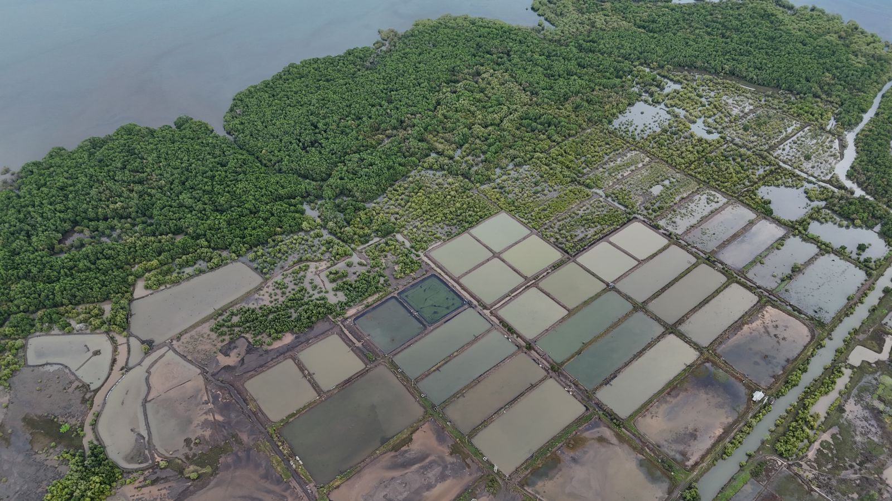
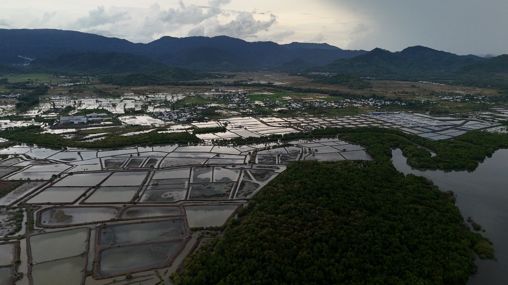
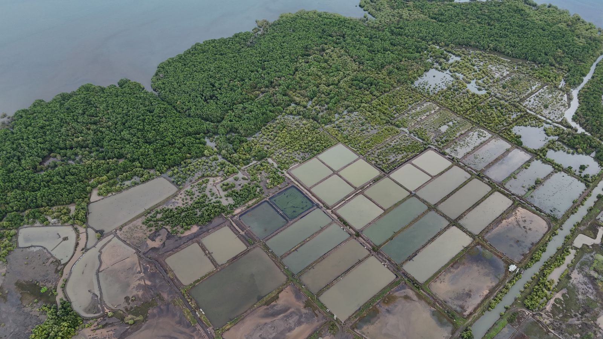
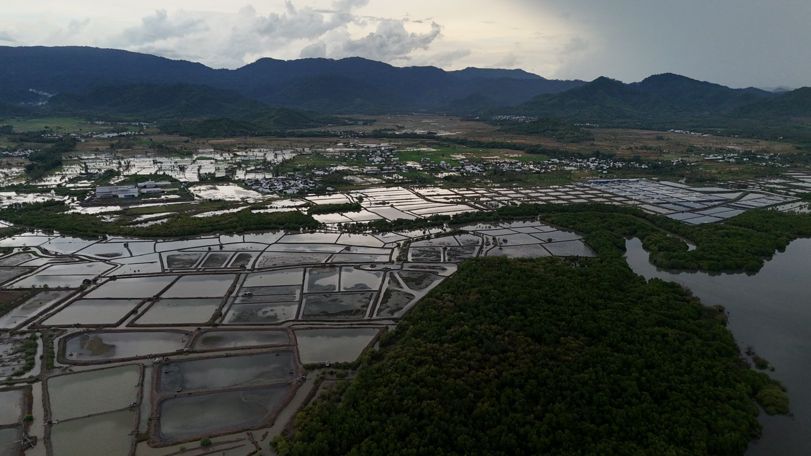
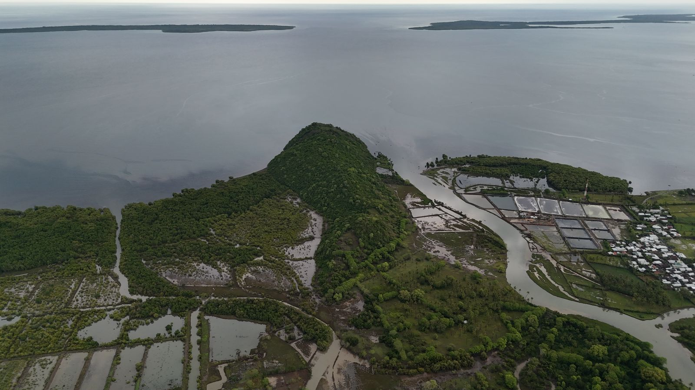
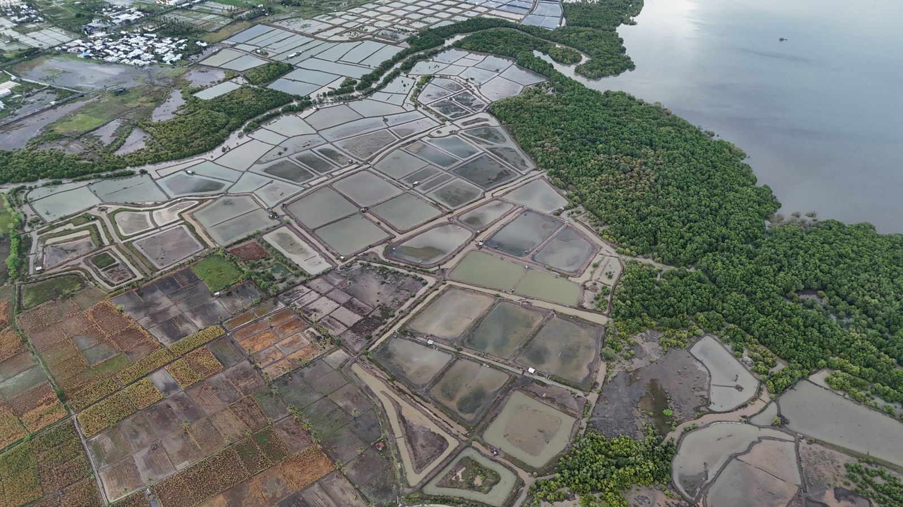
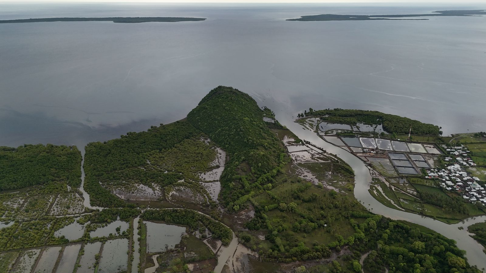
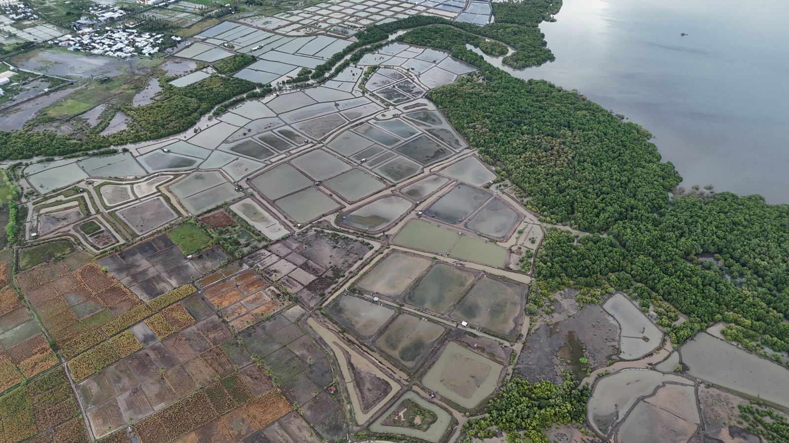
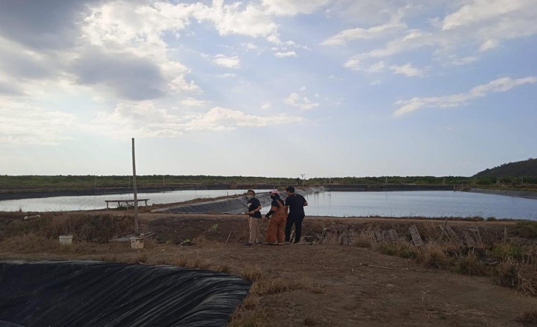
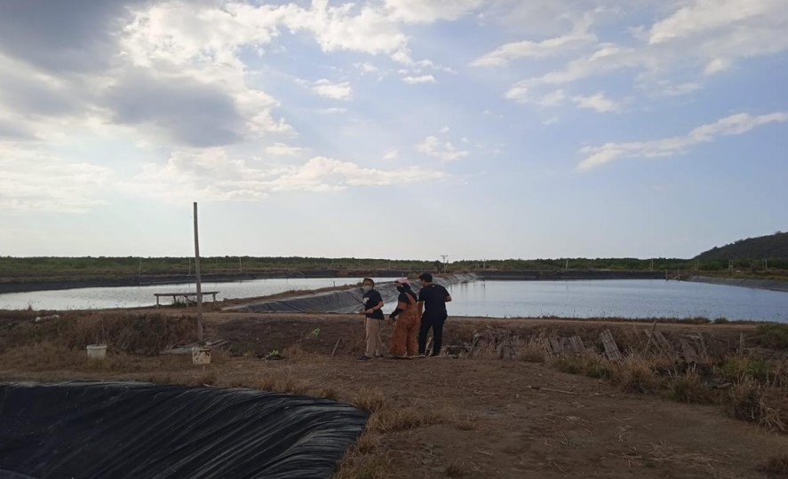

Perusahaan agribisnis yang bergerak di bidang pertambakan udang, budidaya ikan laut, dan pengelolaan sumber daya perikanan berkelanjutan.
PT. Noah Agra Nusantara adalah perusahaan agrobisnis yang berfokus pada pengembangan pertambakan udang dan budidaya ikan laut dengan standar kualitas tinggi serta pendekatan berkelanjutan.
Menjadi perusahaan agribisnis perikanan yang unggul, berkelanjutan, dan berdaya saing global.
 




 



 

PT. Noah Agra Nusantara
Email: info@noahagranusantara.co.id
Telepon: +62 xxx xxxx xxxx
Alamat : Jl. Pandu No. 50 Kuta Utara, Dalung
Bali - Indonesia
Personal In Charge :
Mr. Nico Akbar
email : nicoakbarsaputra@gmail.com
PT. Noah Agra Nusantara terbuka untuk kerja sama strategis,
kemitraan bisnis, dan peluang investasi dalam pengembangan agribisnis perikanan.
Hubungi kami untuk informasi lebih lanjut dan peluang kolaborasi.